Copyright (c) 2010-2013, WADA Masashi All rights reserved.
Web: http://sourceforge.jp/projects/miditrail/
Mail:
1. Introduction
2. System requirement
3. How to install and execute
4. Usage
5. Restriction
6. FAQ
7. How to customize
8. Copyright and license
9. Appendix
10. History
"MIDITrail" is a MIDI player which provides 3D visualization of MIDI datasets.
You can enjoy not only listening but also viewing.
MIDITrail supports SMF format 0/1, and multiple MIDI ports.
MIDITrail is available for Windows, Mac OS X and iOS.
Screenshot: PianoRoll3D
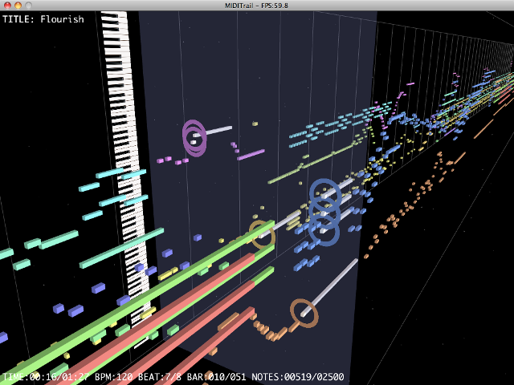
Screenshot: PianoRollRain
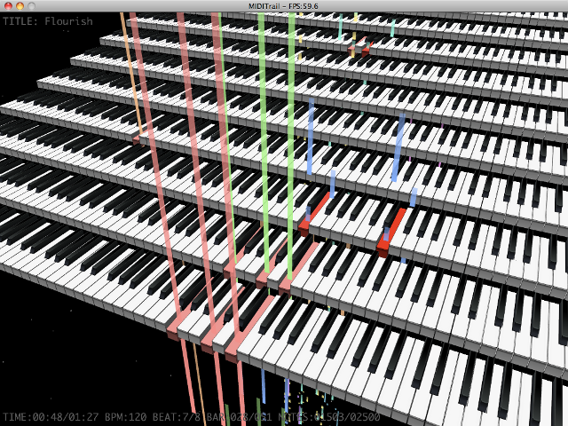
OS: Mac OS X 10.5 (Leopard), 10.6 (Snow Leopard), 10.7 (Lion), 10.8 (Mountain Lion), 10.9 (Mavericks)
CPU: intel CPU (MIDITrail has no support for PowerPC)
It is recommended that your Mac has high performance graphics for smooth animation.
If the MIDI datasets contains a lot of notes, the software needs more performance graphics.
As long as the performance of your Mac allows, please enjoy MIDITrail with large window.
Extract ZIP file, and execute "MIDITrail".
At first, you must setup the MIDI OUT port.
Select "MIDI OUT..." from "Option" menu, then "MIDI OUT configuration" dialog will appear.
At least, you must select the MIDI OUT device of "Port A".
Ordinary MIDI datasets is sent to "Port A".
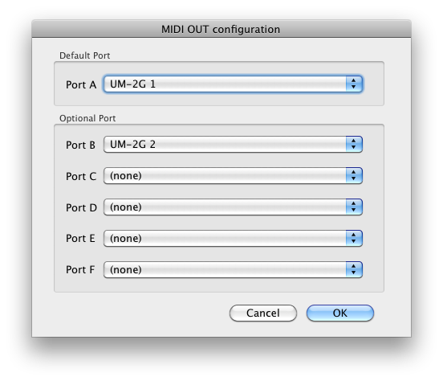
If you want to play the MIDI datasets which uses multiple ports,
you must select the MIDI OUT device of port B, C, and so on.
NOTICE: To play the MIDI datasets which uses multiple ports,
it is necessary to prepare MIDI interface and MIDI module which supports multiple ports.
Delete "MIDITrail" application.
Recomposer is an old popular MIDI sequence software in Japan.
MIDITrail for Windows can open Recomposer data files (*.rcp *.r36 *.g36)
using RCPCV.DLL (Recomposer File Converter) which Mr. Fummy releases.
However, RCPCV.DLL did not work on Mac OS X.
So MIDITrail for Mac OS X does not suport Recomposer files.
Select "Open..." from "File" menu, the Open File dialog will appear. And choose a Standard MIDI File (*.mid).
Or you can drag and drop a MIDI file into the window of MIDITrail.
Push the following keys, or use "Playback" menu.
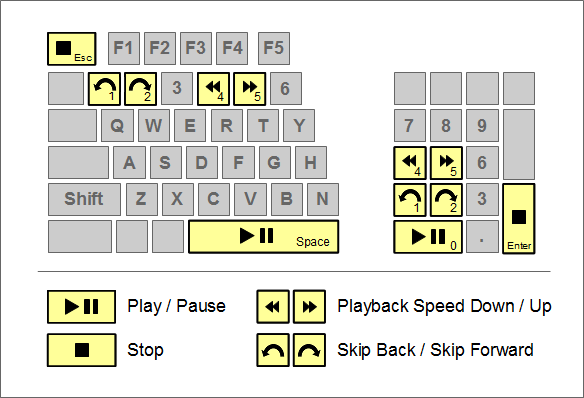
| Key | Action |
|---|---|
| SPACE | Play / Pause / Resume |
| ESC | Stop |
| 12 | Skip Back / Skip Forward |
| 45 | Playback Speed Down / Up |
| F2 | Double speed playback |
You can move freely in 3D space, and look at MIDI datasets from all directions
by operation of keyboard and mouse, like FPS (First Person Shooter) game.
Although there is sense of incongruity in the beginning,
it will be very comfortable as experience is gained.
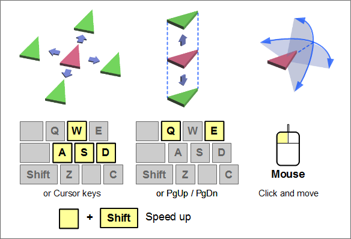
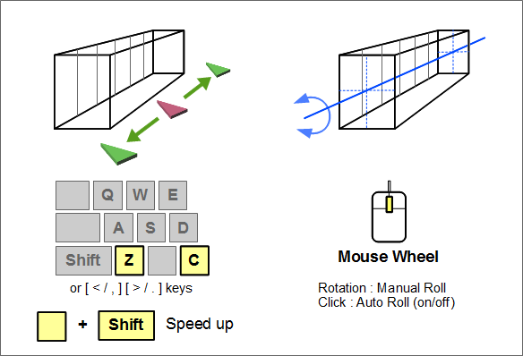
When you click the window, it will become the view control mode by the mouse,
and mouse cursor will disappear.
The eye direction synchronizes movement of your mouse.
If you click once again, view control mode will be canceled.
And you can rotate piano roll using mouse wheel.
Put your index finger on D, middle finger on W, third finger on A.
| Key | Action |
|---|---|
| WS | It moves forward and backward. |
| AD | It moves left and right. |
| QE | It goes up and down. |
| ZC | It moves along the direction of MIDI datasets. (In PinoRollRain, it moves along the piano keyboard.) |
|
SHIFT + [WS] SHIFT + [AD] SHIFT + [QE] SHIFT + [ZC] |
When you push move key with SHIFT key, you can move at high speed. |
|
CTRL + [WS] CTRL + [AD] |
You can control the eye direction. |
You can also use a cursor key. If you use a mouse with your left hand, this one may be convenience.
| Key | Action |
|---|---|
| ↑↓ | It moves forward and backward. |
| ←→ | It moves left and right. |
| PgUpPgDn | It goes up and down. |
| ,. | It moves along the direction of MIDI datasets. (In PinoRollRain, it moves along the piano keyboard.) |
|
SHIFT + [↑↓] SHIFT + [←→] SHIFT + [PgUpPgDn] SHIFT + [,.] |
When you push move key with SHIFT key, you can move at high speed. |
|
CTRL + [↑↓] CTRL + [←→] |
You can control the eye direction. |
When you do the following operation, your viewpoint returns to the default position.
At first, the default position is the viewpoint which looks at MIDI datasets from just beside.
If you want to change the default position, move to your favorite position,
and select "Save viewpoint" from "View" menu.
If you want to restore default position which looks at MIDI datasets from just beside,
select "Reset viewpoint".
If you want to save view point automatically at the time of application termination or scene change, select "Auto save viewpoint" from "View" menu.
Select "Window size..." from "View" menu, the Window size configuration dialog will appear.
Select your favorite window size, and push the OK button.
You can not change window size while playing or pausing.
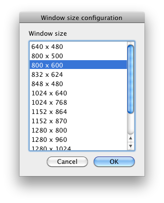
The window size you can select is depends on your Mac.
If you want to customize window size, please check FAQ.
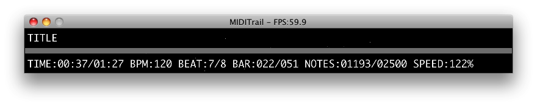
| Counter | Details |
|---|---|
| FPS | Frame Per Second. |
| TITLE | Title of music. |
| TIME | Elapsed time. |
| BPM | Tempo (Beats Per Minute). |
| BEAT | Time signature. |
| BAR | Number of bars. |
| NOTES | Number of notes. |
| SPEED | Playback speed. |
(a) The structure of "Piano roll 3D" visualization
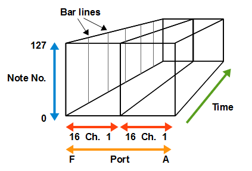
When MIDITrail open the MIDI datasets uses multiple ports, unused port will be not displayed.
For example, if the MIDI datasets uses port A, C and E,
MIDITrail displays port A, C and E side by side, and omits port B and D.
(b) The structure of "Piano Roll Rain" visualization
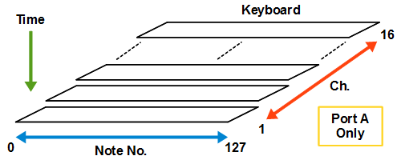
When MIDITrail open the MIDI datasets uses multiple ports,
only piano keyboards of port A will be displayed.
However piano roll bars of all ports will be displayed.
You can select the view mode from "View" menu. You can not change the view mode while playing or pausing.
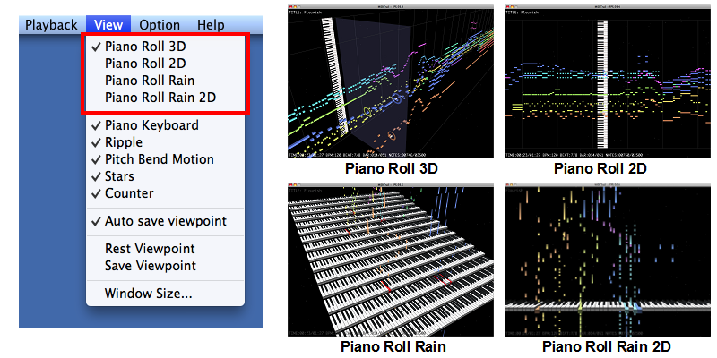
You can switch the display/effect at "View" menu.
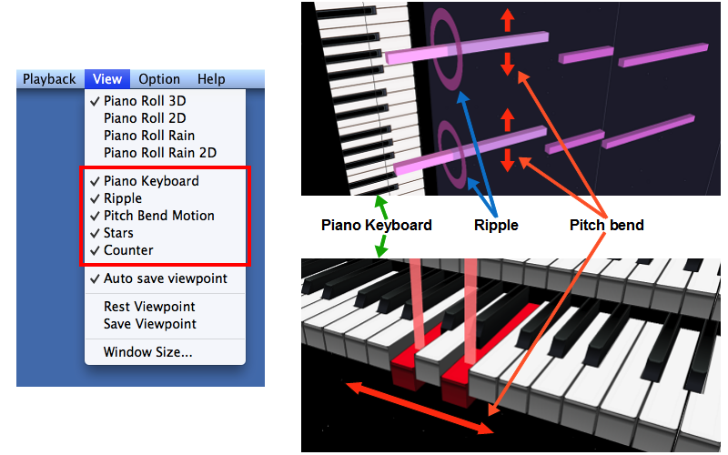
The piano roll bar will move up/down or right/left with change of pitch bend.
Some MIDI animation works are using pitch bend to shift the piano roll bars without change keys.
If the MIDI animation is not displayed correctly, please disable the pitch bend effect to fix the piano roll bars.
If you want to start MIDITrail by command line in Terminal, you can use following arguments.
open ./MIDITrail.app --args [-p] [-q] [path/to/file]
| argument | detail |
|---|---|
| -p | Play MIDI file after startup of MIDITrail. If you did not specify "path/to/file", this option will be ignored. |
| -q | End MIDITrail after end of playback. If option "-p" was not specified, this option will be ignored. |
| path/to/file | MIDI file path. When you specify a path including a space character, please use escape code. ex."file\ name.mid" |
If you drop a MIDI file to the shortcut of MIDITrail, MIDITrail open the file on startup.
Select "Graphic..." from "Option" menu, the graphic configuration dialog will appear.
You can not change graphic configuration while playing or pausing.
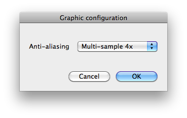
Anti-aliasing
If anti-aliasing is enabled, a notch (jaggy) will decrease and a more beautiful picture will be displayed.
However, since processing of anti-aliasing is heavy, performance may be poor when you select a upper level.
If your Mac does not support anti-aliasing, it is displayed as "Not supported".
You can view data sets received from MIDI IN device in realtime.
Select "MIDI IN..." from "Option" menu, then "MIDI IN configuration" dialog will appear.
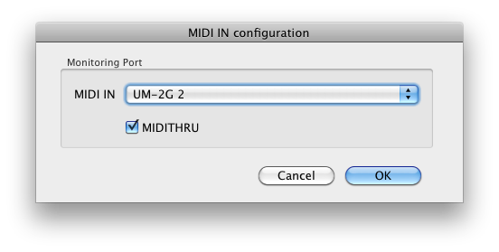
Select the MIDI IN device for monitoring.
If you check the MIDITHRU, MIDITrail will send data sets received from MIDI IN to MIDI OUT.
When you select "Start Monitoring" from "Playback" menu, MIDI IN monitoring will start.
NOTE: MIDITrail can not record data sets received from MIDI IN.
If you use the MIDI module which delays sound (such as software sound modules), the MIDI sound and display may not synchronize.
MIDITrail renders all notes of the MIDI file in real time.
Therefore if MIDI file has a large number of notes, the load of rendering becomes high.
In order to enjoy MIDI file which contains tens of thousands of notes comfortably,
you have to use Mac which has high performance graphics.
In specification of SMF (Standard MIDI File), a method to select port is not defined.
However there is the unofficial method (*1) to select port.
MIDITrail supports that method, but may be unable to play the MIDI file.
It depends on the MIDI file.
(*1) Meta event (FF 21 01 pp) is the command to select port.
MIDITrail can't open the MIDI file whose delta time represents actual time.
Please try to change window size to small, and turn off anti-aliasing. Then the load of rendering becomes low.
Check FPS value in window title.
If the FPS value is under 60, the performance of graphics is insufficient.
When MIDI file has a large number of notes, the load of rendering becomes high.
To confirm the performance of your Mac, please try to open MIDI file which contains few notes.
If the animation does not improve, please use Mac which has high performance graphics.
Move your viewpoint to your favorite position, and select "Save viewpoint" from "View" menu.
Then your current viewpoint will be saved.
Or you can select "Auto save viewpoint" of "View" menu.
You can customize the window size and position.
Please open following file by Property List Editor.
Property List Editor is a utility application of Xcode.
If you want to customize the window size, edit "Width" and "Height".
If you want to customize the window position, add "WindowPosition", "X" and "Y".
~/Library/Preferences/jp.sourceforge.users.yknk.MIDITrail.plist
View
WindowSize
Height=600 (Type:String)
Width=800 (Type:String)
WindowPosition
X=100 (Type:String)
Y=200 (Type:String)
In present version, MIDITrail can not display in full screen. It may support in the future.
You can change size of the ripple by editing configration file.
Please Check "7. Customize - (2) Piano roll".
Change the value of "RippleHeight" and "RippleWidth" larger.
You can customize MIDITrail as your like, by editing the configuration files that were included in resources of MIDITrail.
| File | contents |
|---|---|
| MIDITrail.app/Contents/Resources/conf/Player.ini | Player configuration |
| MIDITrail.app/Contents/Resources/conf/PianoRoll3D.ini | View mode configuration: Piano Roll 3D |
| MIDITrail.app/Contents/Resources/conf/PianoRoll2D.ini | View mode configuration: Piano Roll 2D |
| MIDITrail.app/Contents/Resources/conf/PianoRollRain.ini | View mode configuration: Piano Roll Rain |
| MIDITrail.app/Contents/Resources/conf/PianoRollRain2D.ini | View mode configuration: Piano Roll Rain 2D |
| MIDITrail.app/Contents/Resources/conf/PianoRoll3DLive.ini | View mode configuration: Piano Roll 3D (MIDI IN Monitor) |
| MIDITrail.app/Contents/Resources/conf/PianoRoll2DLive.ini | View mode configuration: Piano Roll 2D (MIDI IN Monitor) |
| MIDITrail.app/Contents/Resources/conf/PianoRollRainLive.ini | View mode configuration: Piano Roll Rain (MIDI IN Monitor) |
| MIDITrail.app/Contents/Resources/conf/PianoRollRain2DLive.ini | View mode configuration: Piano Roll Rain 2D (MIDI IN Monitor) |
If you want to open the resource files, right click MIDITrail icon, and select "Show Package Contents".
Edit [PlayerControl] section.
| Name | Details |
|---|---|
| AutoPlaybackAfterOpenFile | Playback automatically after opening file (0:disable / 1:enable) |
Edit [ViewControl] section.
| Name | Details |
|---|---|
| ShowFileName | Show the file name insted of the title (0:disable / 1:enable) |
Edit [SkipControl] section.
| Name | Details |
|---|---|
| SkipBackTimeSpanInMsec | Skip back time span (msec) |
| SkipForwardTimeSpanInMsec | Skip forward time span (msec) |
| MovingTimeSpanInMsec | Skip animation time span (msec) |
Edit [PlaybackSpeedControl] section.
| Name | Details |
|---|---|
| SpeedStepInPercent | Playback speed step (%) |
| MaxSpeedInPercent | Playback speed max ratio (%) |
Edit [FirstPersonCam] section.
| Name | PR-3D/2D | PR-Rain/2D | Details |
|---|---|---|---|
| VelocityFB | o | o | Velocity of forward and backward. (m/s) |
| VelocityLR | o | o | Velocity of left and right. (m/s) |
| VelocityUD | o | o | Velocity of up and down. (m/s) |
| VelocityPT | o | o | Angular velocity of look. (degree/s) |
| AcceleRate | o | o | The rate of acceleration when push SHIFT key. (n times) |
| VelocityAutoRoll | o | o | Angular velocity of auto rotation of piano roll (degree/s) |
| VelocityManualRoll | o | o | Angular velocity of manual rotation of piano roll (degree/s) |
Edit [Scale] section.
| Name | PR-3D/2D | PR-Rain/2D | Details |
|---|---|---|---|
| QuarterNoteLength | o | o | Length of quarter note (m) |
| NoteBoxHeight | o | x | Height of note box (m) |
| NoteBoxWidth | o | x | Width of note box (m) |
| NoteStep | o | x | Interval length of notes in a channel (m) |
| ChStep | o | x | Interval length of channels (m) |
| RippleHeight | o | x | Height of ripple (m) |
| RippleWidth | o | x | Width of ripple (m) |
| PictBoardRelativePos | o | x | The relative position which crosses perpendicularly the board and the playback section. 0.0 - The left edge of board crosses playback section 0.5 - The center of board crosses playback section 1.0 - The right edge of board crosses playback section |
| LiveNoteLengthPerSecond | o | o | Note length for 1 second in monitor (m) |
| LiveMonitorDisplayDuration | o | o | Display duration in monitor (msec) |
If you set small value to QuarterNoteLength, you can enjoy MIDI datasets like miniature garden.
Edit [Color] section. "A" of "RGBA" means alpha value.
| Name | PR-3D/2D | PR-Rain/2D | Details |
|---|---|---|---|
| NoteColorType | o | o | Note color type CHANNEL: Assign the channel color to the piano roll bar. (Ch-XX-NoteRGBA) SCALE: Assign the scale color to the piano roll bar. (Scale-XX-NoteRGBA) |
| Ch-01-NoteRGBA Ch-02-NoteRGBA : Ch-16-NoteRGBA | o | o | Color of the piano roll bar at each channel.(RGBA) |
| Scale-01-NoteRGBA Scale-02-NoteRGBA ・・・ Scale-12-NoteRGBA | o | o | Color of the piano roll bar at each sacle.(RGBA) 01=C,02=C#,03=D,04=D#,05=E,06=F,07=F#,08=G,F09=G#,10=A,11=A#,12=B |
| GridLineRGBA | o | x | Color of the grid line and bar line. (RGBA) If A of RGBA is 00 then the grid line will disappear. |
| PlaybackSectionRGBA | o | x | Color of the playback section. (RGBA) |
| CaptionRGBA | o | o | Color of the caption/counter string.(RGBA) |
| BackGroundRGBA | o | o | Back ground color(RGBA) |
Edit [ActiveNote] section.
| Name | PR-3D/2D | PR-Rain/2D | Details |
|---|---|---|---|
| Duration | o | x | Duration of active note flash.(msec) |
| WhiteRate | o | x | White rate at "NOTE ON". 0.0 Same color as piano roll bar. It means no flash. 0.5 Neutral color of piano roll bar and white. 1.0 White. |
| EmissiveRGBA | o | x | Emissive color of active note. (RGBA) This value will be ignored on PianoRoll2D. |
Edit [Ripple] section.
| Name | PR-3D/2D | PR-Rain/2D | Details |
|---|---|---|---|
| Duration | o | x | Duration of a ripple.(msec) |
Edit [Stars] section.
| Name | PR-3D/2D | PR-Rain/2D | Details |
|---|---|---|---|
| NumberOfStars | o | o | The number of stars to draw. |
Edit [Bitmap] section.
Place your bitmap file to "data" folder which exists under the MIDITrail folder.
And write the bitmap file name to INI file.
If the height or width of bitmap is too big, your Mac may be unable to draw the bitmap.
In Mac OS X 10.5, if you use the image which size is not (2^n)*m, the texture may be broken.
| Name | PR-3D/2D | PR-Rain/2D | Details |
|---|---|---|---|
| Board | o | x | Bitmap file name of the picture board.(ex. "data\Board.bmp") Instead of piano keyboard, you can display your favorite wallpaper. The aspect ratio of bitmap is arbitrary. To adjust the relative position which crosses perpendicularly the board and the playback section, please edit "[Scale] / PictBoardRelativePos". |
| Ripple | o | x | Bitmap file name of the ripple.(ex. "data\Ripple.bmp") You can change ripple which is displayed on "NOTE ON". The aspect ratio of bitmap is arbitrary. To adjust ripple display size, please edit "[Scale] / RippleHeight, RippleWidth". |
| Keyboard | x | o | Bitmap file name of piano keyboard.(ex. "data\Keyboard.bmp") Texture image of Piano keyboard. You can not change the aspect ratio of this bitmap. |
Edit [PianoKeyboard] section.
| Name | PR-3D/2D | PR-Rain/2D | Details |
|---|---|---|---|
| KeyDownDuration | x | o | Duration of key down (msec) |
| KeyUpDuration | x | o | Duration of key up (msec) |
| KeyboardStepY | x | o | Keyboard step interval: Horizontal direction (m) |
| KeyboardStepZ | x | o | Keyboard step interval: Vertical direction (m) |
| KeyboardMaxDispNum | x | o | The number of the maximum keyboards (0-16) |
| WhiteKeyColor | x | o | Color of white key. (RGBA) |
| BlackKeyColor | x | o | Color of black key. (RGBA) |
| ActiveKeyColorType | x | o | Active key color type STANDARD: Standard color (ActiveKeyColor) NOTE: Note color (Ch-XX-NoteRGBA or Scale-XX-NoteRGBA) |
| ActiveKeyColor | x | o | Color of active key. (RGBA) |
| ActiveKeyColorDuration | x | o | Duration of change from the color of note ON to the last neutral color. (msec) |
| ActiveKeyColorTailRate | x | o | Definition of the last neutral color. Color ratio of the color of note ON (red) and the color of key (white/black) (0.0-1.0) |
| KeyDispRangeStart | x | o | Key display range: start position (0-127) In typical 88-key piano, start position is 21(A0). |
| KeyDispRangeEnd | x | o | Key display range: end position (0-127) In typical 88-key piano, end position is 108(C8). |
Edit [Board] section.
If you want to draw the part of the image that specified at "Board" of [Bitmap] section,
set the rectangle parameters here.
| Name | PR-3D/2D | PR-Rain/2D | Details |
|---|---|---|---|
| ClipImage | o | x | Clip image (0:no/1:yes) |
| ClipAreaX1 | o | x | Clipping area X1 |
| ClipAreaY1 | o | x | Clipping area Y1 |
| ClipAreaX2 | o | x | Clipping area X2 |
| ClipAreaY2 | o | x | Clipping area Y2 |
WADA Masashi holds the copyright of MIDITrail.
MIDITrail is released under the BSD license.
Copyright (c) 2010-2013, WADA Masashi <> All rights reserved. Redistribution and use in source and binary forms, with or without modification, are permitted provided that the following conditions are met: * Redistributions of source code must retain the above copyright notice, this list of conditions and the following disclaimer. * Redistributions in binary form must reproduce the above copyright notice, this list of conditions and the following disclaimer in the documentation and/or other materials provided with the distribution. * Neither the name of the author nor the names of its contributors may be used to endorse or promote products derived from this software without specific prior written permission. THIS SOFTWARE IS PROVIDED BY THE COPYRIGHT HOLDERS AND CONTRIBUTORS "AS IS" AND ANY EXPRESS OR IMPLIED WARRANTIES, INCLUDING, BUT NOT LIMITED TO, THE IMPLIED WARRANTIES OF MERCHANTABILITY AND FITNESS FOR A PARTICULAR PURPOSE ARE DISCLAIMED. IN NO EVENT SHALL THE COPYRIGHT HOLDER OR CONTRIBUTORS BE LIABLE FOR ANY DIRECT, INDIRECT, INCIDENTAL, SPECIAL, EXEMPLARY, OR CONSEQUENTIAL DAMAGES (INCLUDING, BUT NOT LIMITED TO, PROCUREMENT OF SUBSTITUTE GOODS OR SERVICES; LOSS OF USE, DATA, OR PROFITS; OR BUSINESS INTERRUPTION) HOWEVER CAUSED AND ON ANY THEORY OF LIABILITY, WHETHER IN CONTRACT, STRICT LIABILITY, OR TORT (INCLUDING NEGLIGENCE OR OTHERWISE) ARISING IN ANY WAY OUT OF THE USE OF THIS SOFTWARE, EVEN IF ADVISED OF THE POSSIBILITY OF SUCH DAMAGE.
I was enjoying "MIDI ANIMATION" videos which were made by artisans of NICO NICO DOUGA community.
(NICO NICO DOUGA is the video hosting service in Japan.)
Then I got the image that I am walking through the trail, there are many floating piano roll bars.
In order to actualize this image, I started development of MIDITrail.
However, after a few days, I found the demo video of "MIDIPlayer" which supports 3D piano roll at NICO NICO DOUGA.
It dejected me a little, but I continued development to actualize my image.
In Google and Youtube, you can find many videos which converted MIDI datasets into 3D CG animation.
But there is few applications which synchronize MIDI sound and display with 3D visualization.
The applications I found are shown below.
"3D MiDi" is a MIDI player for Windows using OpenGL.
Cubes and balls move about with MIDI sound.
Now, it has been hard to get the software.
MADO NO MORI: "3D MiDi" Alpha 0.1, synchronizes MIDI sound and 3D animation. http://www.forest.impress.co.jp/article/1999/11/18/threedmidi.html
"comp-i" is the software which provides 3D visualization of MIDI datasets.
Its target is intuitive editing of MIDI datasets.
comp-i has been trying to visualize not only a pitch but various parameters of MIDI datasets.
This software is explained in the paper which tackled 3D visualization of MIDI datasets.
Reiko Miyazaki, Issei Fujishiro: "3D Visualization of MIDI Datasets" July, 2002. http://ci.nii.ac.jp/naid/110002935789 Reiko Miyazaki, Issei Fujishiro, Rumi Hiraga: "A System for Visual Exploration of MIDI Datasets" March, 2004. http://ci.nii.ac.jp/naid/110002712125
You can get some related papers by searching web.
comp-i seems to a software for Windows, using World-ToolKit.
It is not opened to the public. I want to see it someday...
"MIDIJam" is a MIDI player for Windows using OpenGL.
This software displays the 3D musical instruments which are performing in real time.
MIDIJam supports 92 different instruments in the latest version.
MIDIJam http://www.gamesbyscott.com/midijam.htm
"MIDIPlayer" is a MIDI player for Java environment using OpenGL.
MIDIPlayer has rendering plug-ins, and one of them supports 3D piano roll.
It can display 3D piano roll which received from MIDI keyboard in real time.
MIDIPlayer http://sourceforge.jp/projects/midiplayer/
| Date | Version | Changelog |
|---|---|---|
| 2010/10/21 | Ver.0.0.0 | Development start. It based on the source code of MIDITrail Ver.1.1.1 for Windows. |
| 2010/12/26 | Ver.1.1.2 | First formal release for Mac OS X. #23973 MIDITrail for Mac OS X development. |
| 2011/12/25 | Ver.1.1.3 |
#25454 Added grid line display control #26985 Added Mac OS X 10.7 (Lion) support #26987 Added playback speed control #26988 Added skip control #26989 Added stars and counter display control #27005 Added figure of player operations guide to "How to view dialog" #26990 Fixed bug. (Typographical errors on the license) |
| 2012/02/12 | Ver.1.2.0 |
#27458 Added MIDI IN monitoring #27459 Added MIDI OUT auto configuration #27457 Fixed bug. (Screen flickers on skip forwad when repeat ON) |
| 2014/1/2 | Ver.1.2.1 |
#32544 Merged features of MIDITrail Ver.1.2.1 for Windows #30545 Added key display range control #30546 Added back ground color control #30547 Added scale color assignment to the piano roll bar #30549 Added improvement of font error message #32543 Added window position control #30550 Added support of virtual MIDI port #30551 Added support of new line character LF in INI file #32360 Added menu item "Auto save viewpoint" #32361 Added ability to save viewpoint in MIDI IN monitoring #32362 Added ability to playback automatically after opening file #32363 Added ability to open the file while playing #32366 Added ability to display the file name #32367 Added view mode "Piano Roll Rain 2D" #32427 Added note color assignment to active key #32606 Added support of app sandbox #32365 changed title caption ("TITLE:" string was removed) #32730 changed development environment to Xcode 4 #30548 Fixed bug. (At the start of playback, MIDI data transmission is blocked) #32359 Fixed bug. (MIDITrail does not send some CC events at skip processing) #32542 Fixed bug. (MIDITrail fails to get the offline property of MIDI device) #32779 Fixed bug. (MIDI OUT device "none" does not take effect) |